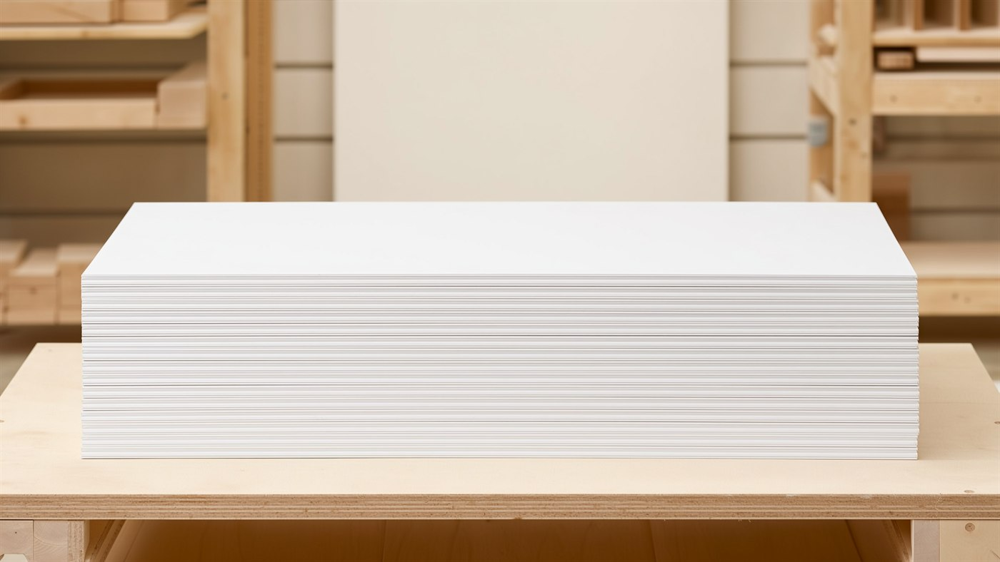
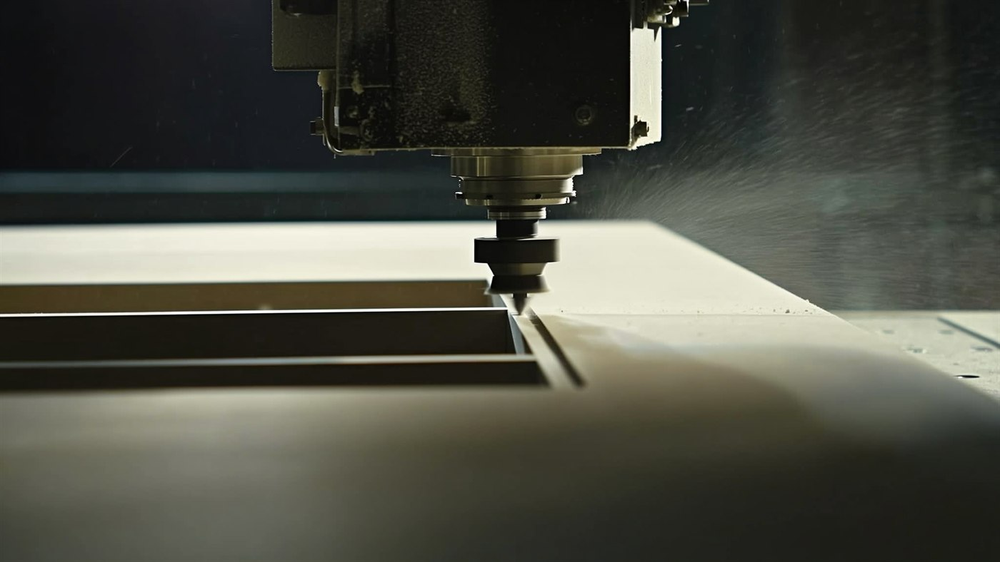

Prepared for: Bryan — Custom Woodworking LLC Prepared by: Devon H. Date: June 2026 Channels: Facebook · Instagram · TikTok Engagement type: Done-for-you social media management & lead generation
This is a business-to-business marketing plan. The goal is simple: put a steady, predictable stream of qualified cabinet-shop leads in front of Custom Woodworking LLC, at a known cost per lead, using Facebook, Instagram, and TikTok.
The strategy runs on two engines. The first is proof of craft: a steady stream of short product and process videos that builds credibility and earns reach organically, with no ad spend. The second is a single always-on paid campaign that turns that attention into leads, captured directly inside Facebook and Instagram. As the program proves its cost per lead, we scale spend and geography deliberately rather than guessing up front.
The one promise everything ladders up to: "The dependable door partner your shop can build on."
Marketing aimed at the wrong audience is the single most common way ad budgets get wasted. Our buyer:
| Buyer | What they care about | Where they are |
|---|---|---|
| Cabinet shops | Consistent doors they can finish & resell, on time | FB, IG, FB Groups |
| Kitchen & bath remodelers | Predictable supply, clean primed surfaces, fewer callbacks | IG, FB |
| General contractors / builders | One dependable source, volume pricing | FB, IG |
| Cabinet refacing companies | Door range + finish options in matching profiles | IG, FB |
A purchasing decision-maker at a cabinet shop is a normal person who scrolls Facebook and Instagram in the evening. Recent industry data shows nearly half of B2B decision-makers use Facebook for business research — Meta is not just a consumer platform. We meet them where they already are, with content that respects that they're a professional, not a weekend DIYer.
Every post, ad, and video maps back to one of four pillars. Each pillar is built to mitigate a specific fear that makes a cabinet shop hesitate to switch suppliers.
| Pillar | What we say | The buyer fear it removes |
|---|---|---|
| Consistency | Same profile, same dimensions, every single order | "My last supplier's doors didn't match between batches" |
| Stability | MDF doesn't expand or contract — it won't crack, swell, or warp like 5-piece solid wood | Warranty callbacks and unhappy customers |
| Finish-ready | Factory primer gives a smooth, uniform, paint-ready surface and saves prep labor on site | Wasted shop hours sanding and sealing |
| Range & flexibility | Large profile range, available raw / sanded / primed | "I have to source doors from three different places" |
Each platform has a distinct job. We do not post identical content everywhere blindly — we repurpose one batch of source assets into platform-appropriate cuts.
| Platform | Primary job | Content style |
|---|---|---|
| Flagship portfolio + Reels — the visual credibility library | Polished product shots, finish comparisons, Reels | |
| Same content + the paid lead engine + local Group presence | Lead-form ads, posts, participation in cabinet/contractor Groups | |
| TikTok | Top-of-funnel reach — get discovered by new shops | Same Reels cross-posted; raw, low-polish cuts perform best here |
Why low-polish video works on TikTok: in the woodworking/CNC niche, unscripted "watch this get made" content consistently outperforms over-produced ads. We lean into it — it's cheaper to make and it performs better.
A repeatable system is what separates a sustainable program from a burst of posts that fizzles out. Content rotates through a set of recurring content buckets so the feed stays varied and every post has a job. (The specific buckets will be defined with Custom Woodworking LLC.)
Production cadence (per week):
Asset pipeline (fully remote): each month the client sends one batch of raw source material — product photos, logos and brand files, and any quick phone footage of the shop or product captured from a simple shot list we provide. Where the client can't supply a particular shot, we source appropriate licensed/stock visuals. We then handle all editing, scheduling, and posting remotely. This keeps the client's time commitment to about an hour or two a month and requires no on-site production.
Two campaigns, kept deliberately simple:
Creative testing discipline: keep 3–4 ad creatives live at once, review on a steady cadence — roughly every two weeks at starter spend, where enough data has accumulated to act on — kill the losers, and put budget behind winners. This is a proven, time-tested discipline with a long track record of steadily driving down cost per lead — not guesswork with the client's budget.
Ad budget is set with the client. Below are three starting points; all figures are ad spend paid to Meta, separate from your management fee. Lead estimates are planning ranges that we replace with real numbers after the first 30 days.
| Tier | Monthly ad spend | What it funds | Rough expected leads/mo* |
|---|---|---|---|
| Lean | $300 | Organic engine + light post boosting | 5–15 |
| Starter | $800 | + one always-on lead campaign | 15–40 |
| Growth | $2,000 | + retargeting, lookalikes, faster testing | 40–100 |
*Ranges are illustrative for a regional B2B audience and will vary by geography, offer strength, and creative. We commit to measured numbers after the first month, not promises before it.
Recommendation: start at Starter ($800) for 30–60 days to find a real cost-per-lead, then decide whether to scale to Growth. The Lean tier is a valid "test the waters" entry if the client wants to start smaller.
We concentrate ad spend on Custom Woodworking LLC's existing market area — the regions they already serve and can fulfill today. This keeps every dollar pointed at shops the client can actually do business with, rather than paying to reach areas outside their reach.
As the program matures and we learn more about the client's fulfillment range, we can revisit the targeting radius together and widen it where it makes sense.
We manage to numbers, not vibes. Tracked monthly:
Deliverable: a one-page monthly report in plain English — what we spent, what came in, what we're changing next month. No jargon dumps.
Four starting concepts, each tied to a pillar. These are directions to build on — final ads should use Custom Woodworking LLC's real product photos and shop footage, which will always outperform stock or AI concept images. Two sample concept images are included as visual stand-ins:
| Concept image | Use |
|---|---|
 |
Concept C hero — clean primed-stack with headline space on top (final ad should swap in a real photo showing the shaker profile) |
 |
Concept A "Process / Flatness" Reel & TikTok cover — ready to use |
| Phase | Weeks | Focus |
|---|---|---|
| Setup | 1–2 | Audit accounts, set up Meta Business/ads manager, lead form, tracking; collect first batch of brand assets & product images |
| Launch | 3–6 | Publish content engine; launch Starter lead campaign (existing market area); test 3–4 creatives |
| Optimize | 7–12 | Cut losing ads, scale winners, build first lookalikes, deliver month-1 & month-2 reports; decide on budget/geo expansion |